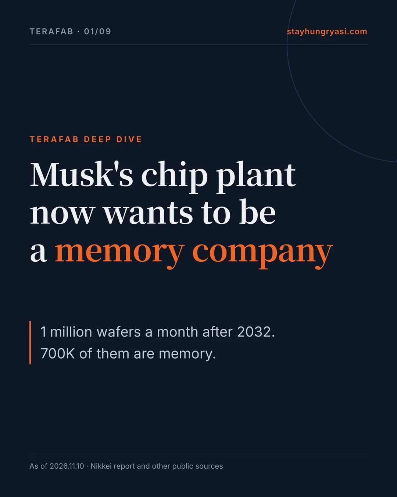
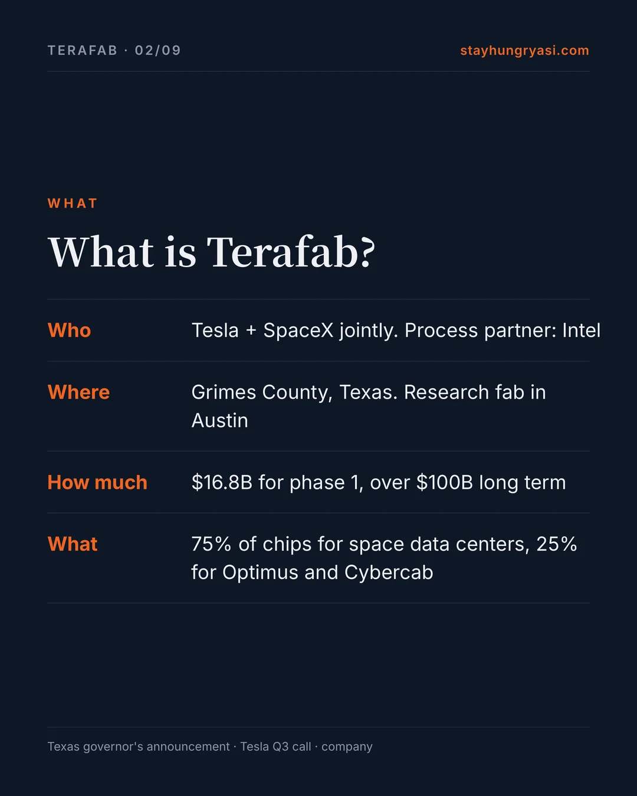
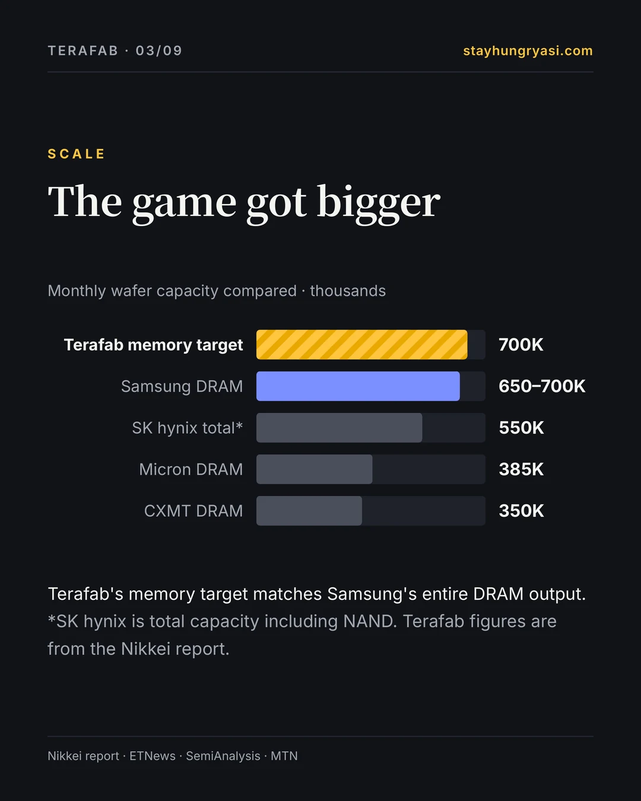
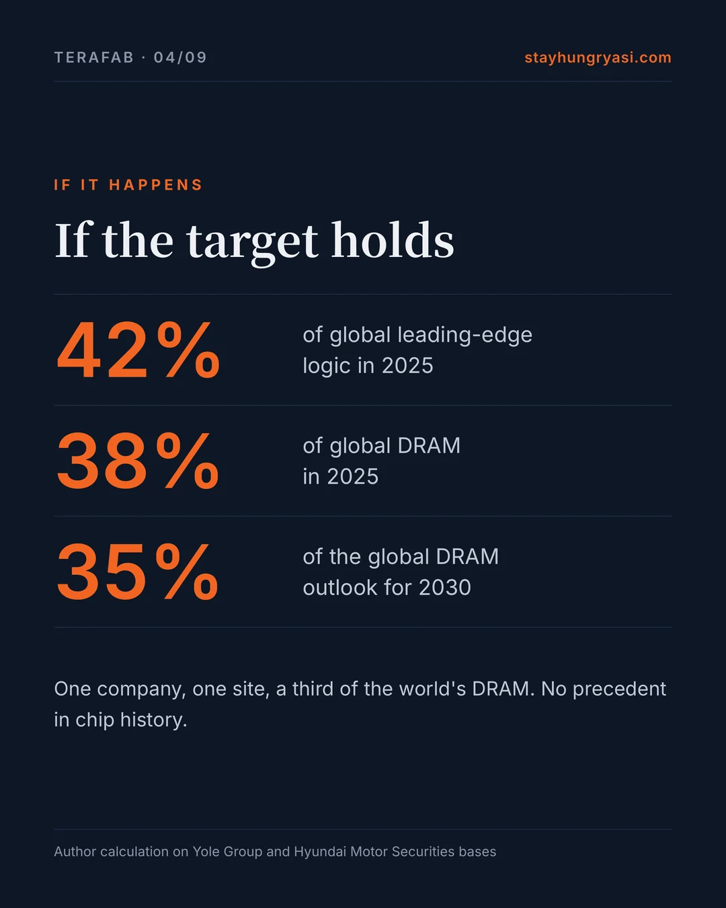
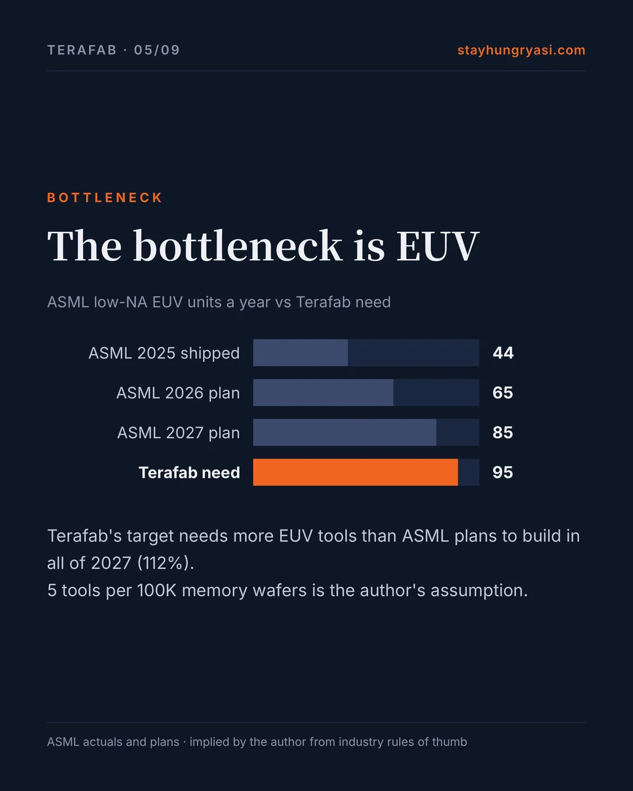
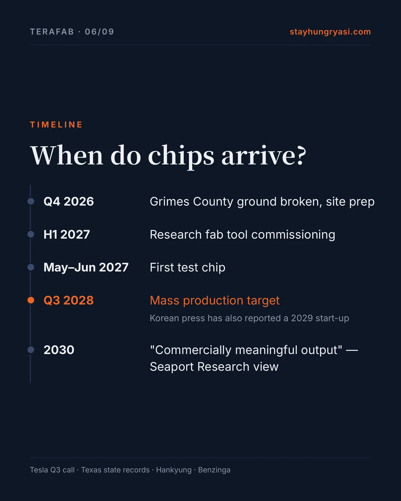
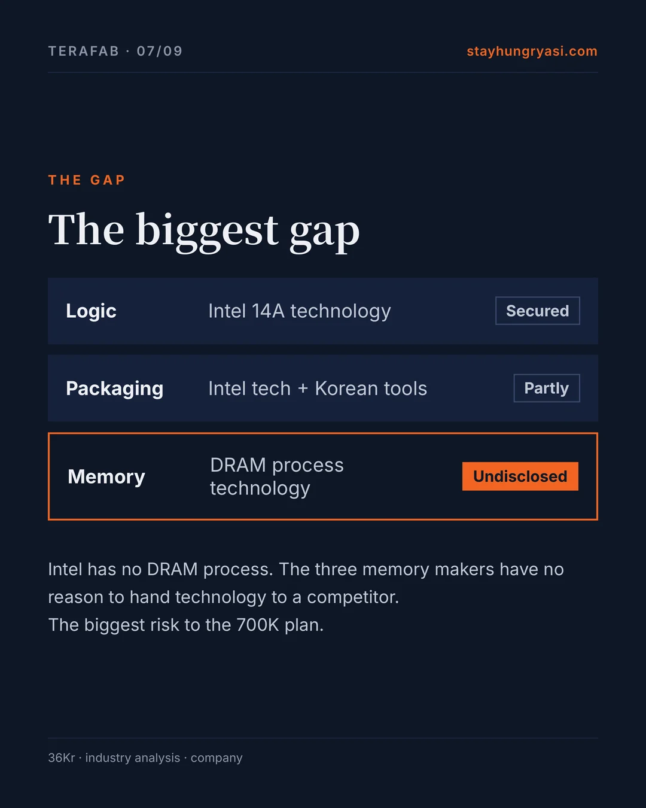
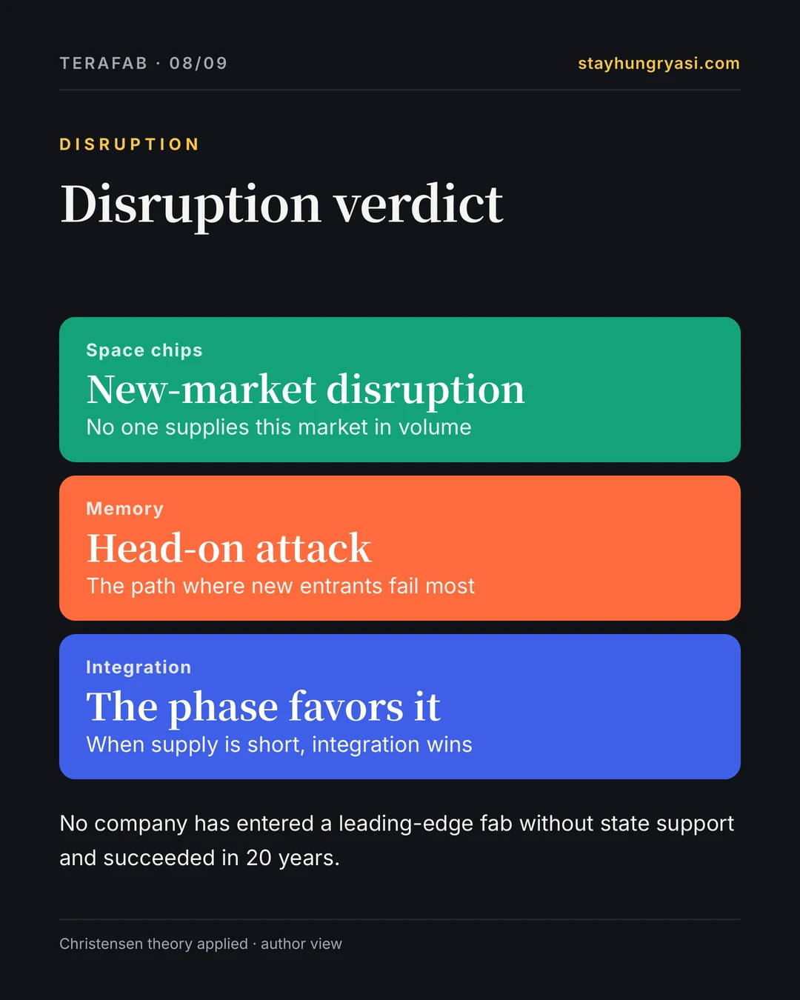
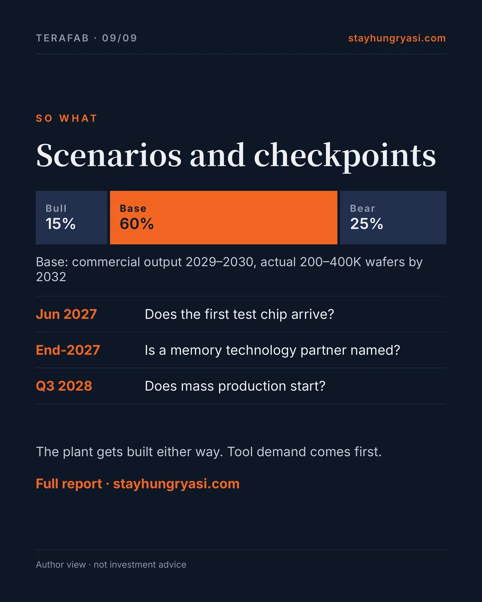

Data as of November 10, 2026 (KST) · stayhungryasi.com
Labels: [Fact] confirmed fact · [Company] company claim · [Report] press report or market estimate · [View] author view. Scenario probabilities are the author's subjective view. Each of the 33 claims in the earlier analysis was rechecked against its original source.
Disclosure: This research was written with AI (Claude). It is not investment advice.
The story in 9 cards
The key points in nine cards. Click an image to enlarge it.


















Summary
Terafab is the chip plant Tesla and SpaceX are building in Texas. A Nikkei report on November 9 raised the target to 1 million wafers a month after 2032, 700K of them memory. That is about the size of Samsung Electronics' entire DRAM operation. Real money has started to move through tool orders. But where the memory technology will come from, the yield, and how the two companies split the cost are all still undecided.
| Item | Detail | Basis |
|---|---|---|
| Phase 1 investment | $16.8B · Grimes County, Texas | [Fact] Texas governor's announcement |
| Long-term investment | Over $100B · cost split undecided | [Company] Tesla Q3 call |
| Final capacity | 1M wafers a month (memory 700K · logic 300K+) | [Report] Nikkei |
| First test chip | May–June 2027 | [Company] Tesla Q3 call |
| Mass production | Target Q3 2028 · a 2029 start-up has also been reported | [Company] / [Report] Hankyung |
| Use of chips | Space data centers 75% · Optimus and Cybercab 25% | [Fact] company announcement |
| Process partner | Intel 14A · in talks with TSMC (no deal) | [Fact] company and press |
One-line view [View] — The plant will get built. But as long as nothing backs the "700K memory wafers," Terafab is still a plan.
1. What changed in the last 30 days
| Date | Detail | Basis |
|---|---|---|
| 2026-10-20 | SpaceX Q3 call: mass production at the main site targeted for Q3–Q4 2028 | Company |
| 2026-10-20 | SpaceX Q3 revenue $14.6B, net income $4.4B, quarterly capex $19.6B | Fact |
| 2026-10-21 | Tesla Q3 call: tool commissioning in H1 2027, first test chip in May–June, mass production in Q3 2028 | Company |
| 2026-10-21 | Tesla call: tens of billions of dollars on tools through early 2028, over $100B long term, Tesla–SpaceX cost split undecided | Company |
| 2026-10 | TSMC joins only if it runs the fab; Musk allows only a partial cleanroom lease — no agreement | Fact |
| 2026-11-06 | Musk repeats the goal of cutting chip development from a year to a month | Company |
| 2026-11-09 | Nikkei: 1 million wafers a month after 2032 (about 700K memory, at least 300K logic) | Report |
| 2026-11-09 | Nikkei: buyers visited Japan and placed rush tool orders (some due within months, suppliers not named) | Report |
| 2026-11-09 | ASML and other chip-tool stocks rebound after the report | Fact |
2. First announcement vs now
The schedule and partners have retreated while the output target has grown. It is a familiar pattern in Musk projects; the difference this time is that tool orders are following. [View]
| Item | First announcement | Now | Signal |
|---|---|---|---|
| Investment | $20–25B (March) | Phase 1 $16.8B / local filing $55–119B / over $100B long term | Mixed |
| Site | Next to Tesla HQ in Austin | Austin = research fab, Grimes County = mass production | Neutral |
| Logic process | 2nm | Started on Intel 18A → changed to 14A | Retreat |
| Partners | Built in-house | Intel + talks with TSMC (no deal) | Retreat |
| Schedule | Early output 2027, mass production 2028 | Test chip mid-2027, mass production Q3 2028 (Hankyung reports 2029 start-up) | Retreat |
| Output | 100K wafers a month at first → 1M eventually | 1M wafers a month after 2032, 70% of it memory | Expansion |
| Use of chips | Tesla 20% / space chips 80% (April) | Tesla 25% / space data centers 75% (August) | Neutral |
| Binding terms | None | IPO filing calls it a 'general framework'; finance, IP and commitments to be agreed later | Retreat |
| Jobs | Not disclosed | 3,000+ in phase 1 (governor) vs 1,500–1,800 permanent jobs after all four phases (regional council estimate) | Conflicting |
3. Checking the numbers
a) Capacity — wafers a month, thousands
Terafab figures are from the Nikkei report. Samsung DRAM is the midpoint of a 650–700K estimate (Nov 2025). SK hynix is total capacity including NAND, so it should not be compared directly with the memory target. TSMC and Rapidus are implied from reported ratios.
| Comparison | Share [View · calculation] |
|---|---|
| Logic 300K ÷ global sub-10nm logic in 2025 (Yole Group) | 42.4% |
| Memory 700K ÷ global DRAM in 2025 (Yole Group) | 37.8% |
| Memory 700K ÷ global DRAM outlook for 2030 (Hyundai Motor Securities) | 35.0% |
If the target holds, one company on one site would make a third of the world's DRAM. There is no precedent for that in chip history. Whether the 700K is DRAM only, or mixes in NAND or HBM, has not been disclosed. [View]
b) The bottleneck tool — EUV scanners
ASML figures are actuals and company plans (2028 is calculated from the extra 30% expansion under review). Terafab needs are implied at 20 tools per 100K logic wafers (industry rule of thumb) and 5 per 100K memory wafers (author assumption).
Terafab's full target needs about 95 EUV tools. That is 112% of ASML's production plan for 2027, and logic alone is 71%. ASML has already said its 2027–28 capacity falls short of customer demand. Terafab will have to queue alongside Samsung, SK hynix and TSMC. [View]
c) Capital — billions of dollars, log scale
On a log scale, real differences are far larger than the bar lengths suggest. Bernstein's estimate (the full 1TW) is about 300 times phase 1.
Funding is clearly better than in March. SpaceX swung to a Q3 net profit of $4.4B and holds about $90B in cash and securities. But it plans to spend $35–40B on capex in Q4 alone, mostly on data centers. How much has actually gone into Terafab is not disclosed. [Fact]
d) People
| Item | Number | Source | Grade |
|---|---|---|---|
| Phase 1 permanent jobs | 3,000+ | Texas governor's office | Company |
| Construction workers (on site) | 4,000–5,000 | Brazos regional economic council estimate | Market |
| Permanent jobs after all four phases | 1,500–1,800 | Brazos regional economic council estimate | Conflicting |
| Increase in job postings | About 50% above the 2025 average | Accessory seller blog (secondary) | Unverified |
| Staff needed at 1M wafers a month | Tens of thousands | Author view (no hard data) | View |
The governor's 3,000 and the regional council's 1,500–1,800 do not match. Either way, it is far too few for 1 million wafers a month. People are likely to be a bigger bottleneck than tools. [View]
e) Yield — no published figures
Terafab has never disclosed a yield. Analysts assume 80% for logic and 70% for HBM for a new entrant. Below is the author's estimated range. [View]
| Year | Estimated range | Note |
|---|---|---|
| 2027 | — | Test-chip stage; yield hardly applies |
| 2028 | 20~40% | Mass production starts; not yet competitive |
| 2029 | 40~65% | Learning-curve phase |
| 2030 | 60~80% | Goldberg's 'commercially meaningful output' point |
| 2031 | 75~85% | Could reach the new-entrant assumption |
4. The biggest gap: where the technology comes from
Logic has a source: Intel 14A. There are also reports that Gary Jiang, a 17-year Intel veteran, was hired to lead the 14A transfer. But no source has ever been disclosed for the DRAM process technology behind 700K memory wafers a month. Intel has no DRAM process, and the three memory makers have no reason to hand core technology to a competitor. This gap is Terafab's biggest risk. [View]
| Product line | Technology source | Disclosure | Risk |
|---|---|---|---|
| Logic | Intel 14A license (an IBM–AMD style transfer is discussed) | Partly disclosed | Medium |
| Memory (DRAM, HBM) | Not disclosed | Not disclosed | Highest |
| Advanced packaging | Intel EMIB/Foveros (reported) + Korean tools | Partly disclosed | Medium |
| Radiation-hardened space chips (D3) | Designed in-house by SpaceX | Process not disclosed | High |
| Masks and test | Planned in-house inside the research fab | Company claim | Medium |
5. Disruption diagnosis
| Product line | Christensen type | Reasoning |
|---|---|---|
| Radiation-hardened space chips | New-market disruption | No one supplies space-grade AI compute in volume. It is a foothold incumbents ignore. |
| Edge inference chips | Sustaining · insourcing | For Optimus and Cybercab. The market already exists. The goal is supply security and iteration speed, not disruption. |
| 700K memory wafers | Sustaining head-on attack | The same product in the same market as Samsung, SK hynix and Micron. The path where new entrants have failed most often. |
| The integrated structure | A phase that favors integration | AI compute and memory are in short supply. That fits Christensen's modularity theory, which says integrated firms win while performance is not yet good enough. |
Value chain. Logic, memory, packaging, test and masks under one roof. The largest buyer is trying to reverse 30 years of a split structure: fabless, foundry, memory and back-end.
Speed and demand. The goal of cutting chip development from a year to a month, captive demand that needs no outside customers, and counting demand in "terawatts" rather than wafers set it apart from earlier entrants. The one-month cycle has no supporting evidence yet. [View]
6. Base rates — how earlier entrants did
| Entrant | State support | Result | Time | Verdict |
|---|---|---|---|---|
| Rapidus (Japan, 2nm) | Yes | ¥2.354 trillion in subsidies, trial output end-2026, mass production planned for 2027 | Founded 2022 → about 5 years | Ongoing |
| CXMT (China, DRAM) | Yes | Share from 1% in 2020 to 7–8%; 350K wafers a month (end-2026 estimate) | About 10 years | Partial success |
| China leading-edge logic | Yes | Hired thousands of TSMC engineers, gap remains | 10+ years | Fell short |
| Intel 18A (incumbent) | Partly | Yield problems on a new node despite 50 years in the business | Ongoing | Ongoing |
| Tesla 4680 battery (Musk) | No | Judged disappointing versus plan (personal blog opinion, weak evidence) | 2020– | Fell short |
| SpaceX reusable rockets (Musk) | No | Commercialized against industry skepticism | About 13 years | Success |
In the last 20 years, no company has entered leading-edge logic or DRAM without state support and succeeded. Even state-backed CXMT took 10 years to reach a single-digit share. Terafab differs in only two ways: captive demand and money. [View]
7. Bear case
| Severity | Risk | Detail |
|---|---|---|
| Highest | Missing memory technology source | No source of process technology for 700K memory wafers a month has been disclosed |
| High | Technology and yield | GAA below 2nm, where small deviations crush yield. No yield figures disclosed |
| High | Schedule | Tool suppliers say the first small tool batch is unlikely before 2028 (Goldberg) |
| High | Capital | $100B+ long term vs Bernstein's $5 trillion; cost split undecided; competes with data-center spending |
| High | People | 3,000 in phase 1, conflicting permanent-job estimates, talent fight with Korea and Taiwan |
| Medium | Governance | Neither Tesla nor Intel is obliged to stay (IPO filing) |
| Medium | Partner conflict | Intel 14A and TSMC lines on one site would need IP separation |
| Medium | Local pushback | About 900 residents petitioned for more oversight; 35-year property tax abatement approved |
8. Scenarios
| Scenario | October | November | What it looks like |
|---|---|---|---|
| Bull | 15% | 15% | Mass production in 2028, competitive logic yield by 2030, 500K+ wafers by 2032, some Nvidia GPUs replaced |
| Base | 55% | 60% | Research fab runs in 2027, commercial output 2029–2030, actual 200–400K wafers by 2032, reliant on partners |
| Bear | 30% | 25% | Delays of 2+ years, smaller scale, effectively turns into an outside long-term supply deal |
Tool orders have actually started and SpaceX has turned profitable, so Bear was lowered. The memory expansion makes the task harder, so Bull was left unchanged. What matters is that tool demand appears in 2027–2030 even in the Base case. Reaching only 20–40% of the target still needs new tools for 200–400K wafers a month. [View]
9. Value chain structure
This maps the structure of the impact and is not a recommendation to buy or sell any stock. Where the basis is "Expectation only" or "Author view," no order has been confirmed.
| Group | Company | Country | Basis | Detail |
|---|---|---|---|---|
| Gains in any scenario | ASML | Netherlands | Demand reported | Terafab demand built into 2027–28 capacity plans (Reuters) |
| Gains in any scenario | Applied Materials | US | Order reported | Front-end tool orders reported in Q2 |
| Gains in any scenario | Lam Research | US | Order reported | Front-end tool orders reported in Q2 |
| Gains in any scenario | Tokyo Electron | Japan | Order reported | Q2 orders reported; rush orders in Japan in November (suppliers not named) |
| Conditional gains | Hanmi Semiconductor | Korea | Conflicting reports | Hankyung (Sep 14) reported a packaging-tool purchase order; Asia Economy (Oct 2) reported no confirmed order (still under discussion). Bought KRW 50 billion of SpaceX shares in June |
| Gains in any scenario | HPSP | Korea | Order reported | High-pressure hydrogen annealing (HPA) test tool reported for delivery to the Austin research fab in H1 2027 (Asia Economy, Oct 2) |
| Conditional gains | Intel | US | Deal disclosed | 14A reference. If it is a license, it is not Intel fab revenue |
| Conditional gains | TSMC | Taiwan | In talks | Gains if it wins operating control; limited if it only leases cleanroom space |
| Conditional gains | Micron | US | Expectation only | Candidate DRAM technology partner (author view). The 'securing volume' remark is unverified |
| Conditional gains | Wonik IPS, Jusung Engineering, PSK | Korea | Expectation only | If the 700K memory plan becomes real. No order reports |
| Conditional gains | Soulbrain, Dongjin Semichem | Korea | Expectation only | Materials. No order reports |
| Near-term gain, long-term risk | Samsung Electronics | Korea | Deal confirmed | AI5 trial production in Texas, AI6 $16.5B deal. A DRAM competitor emerges in the long run |
| Near-term gain, long-term risk | SK hynix | Korea | Author view | Outside HBM demand through 2030. Loses a large customer after 2032 in the Bull case |
| Hurt (Bull case only) | Nvidia | US | Author view | Some GPUs for space data centers replaced by in-house chips |
| Hurt (Bull case only) | Simmtech, Daeduck Electronics | Korea | Author view | Substrates and packaging threatened if US back-end becomes self-sufficient (Nov 2025 analysis) |
10. What to watch over the next 24 months
| When | Checkpoint | Warning sign |
|---|---|---|
| Q4 2026 | Grimes County moves from site prep to main construction (ground broken in October) | No main construction by H1 2027 |
| Jan 2027 | Tesla Q4 call: cost-split agreement | No binding contract by mid-2027 |
| H1 2027 | Research fab tool commissioning, EUV move-in | Commissioning slips to H2 |
| May–Jun 2027 | First test chip | Slips past Q4 2027 |
| During 2027 | DRAM technology partner disclosed | Not disclosed by end-2027 → the 700K plan is not credible |
| During 2027 | Outcome of TSMC talks | TSMC wins operating control → the 'own fab' story weakens |
| 2027 | Intel 14A risk production, outside customers | 14A schedule slips |
| Every quarter | Whether Terafab spending is disclosed separately | Terafab spending cut in favor of data centers |
| Every quarter | Mentions on ASML, TEL, AMAT earnings calls | Toolmakers drop Terafab from their outlook |
| Q3 2028 | Mass production starts | Officially pushed to 2029 or later |
11. Three-sentence summary
- Terafab is the largest chip plant ever planned, which Musk is building in Texas to make AI chips and memory for Tesla and SpaceX himself.
- No chip has come out yet; the first test chip is targeted for mid-2027 and full production for the second half of 2028. Securing memory technology and the defect rate are the biggest hurdles.
- The plant is being built whether or not it succeeds, so tool demand comes first; for existing memory makers it means demand for now and a competitive variable after 2030.
Verification notes
Each of the 33 claims in the earlier analysis was rechecked against its original source: 19 confirmed, 8 partly corrected, 2 report only, 2 unverified and 2 downgraded. Unverified and downgraded items were removed as support for the conclusions. The items that were not simply confirmed are listed below.
| Claim in the earlier analysis | Verdict | Finding |
|---|---|---|
| Samsung DRAM 650–700K wafers a month | Partly corrected | Matches the source, but it is a Nov 2025 estimate that misses later expansion |
| SK hynix about 550K wafers a month | Partly corrected | Total DRAM+NAND capacity; a one-to-one comparison with Terafab memory is wrong |
| Logic 300K = 42% of global leading-edge logic in 2025 | Partly corrected | Math is right, but the base is 2025, so the share of the 2032 market is lower |
| Memory 700K = 38% of global DRAM in 2025 | Partly corrected | 35% against the 2030 outlook of 2 million wafers a month. Whether the 700K is DRAM only is unclear |
| 4,000–5,000 construction workers, four phases over 9–10 years | Partly corrected | The same source estimates 1,500–1,800 permanent jobs after four phases, at odds with the governor's 3,000. Missed in the earlier analysis |
| Job postings up about 50% over the 2025 average | Unverified | Blog of a Tesla accessory seller (secondary). No primary data |
| Grimes County ground-breaking on Dec 1 | Partly corrected | Ground broken with the tax agreement in early October; still site prep in mid-October (Oct 24 hub research). The Dec 1 main-construction date is secondary |
| Hanmi Semiconductor won a Terafab packaging-tool order | Partly corrected | Hankyung (Sep 14) reported a purchase order; Asia Economy (Oct 2) reported no confirmed order — the reports conflict. HPSP is the Korean firm with a reported delivery. Hanmi bought KRW 50 billion of SpaceX shares in June, so it has a stake |
| 1 million wafers a month after 2032 (700K memory) | Report only | Many outlets cite Nikkei. Not an official company announcement |
| Rush orders to Japanese toolmakers | Report only | Suppliers and amounts not disclosed |
| Mass production in Q3 2028 | Partly corrected | Matches the company claim. Hankyung's Sep 14 report gives a 2029 start-up target instead |
| Wafer cost 30–50% above TSMC | Downgraded | From an AI news aggregator; the original analysis cannot be found. Do not use as evidence |
| Tesla 4680 as a cautionary case | Downgraded | Personal blog opinion. Kept as a case but marked as weak evidence |
| Micron 'securing volume for Tesla' remark | Unverified | Secondary source; original transcript not found |
How this relates to earlier research
The tool-by-tool beneficiary map and the phase-by-phase equipment estimates are in the October 24 report, Terafab Equipment Map. This piece adds the later Nikkei report on 700K memory wafers and the Q3 earnings calls, and, as before, treats the Hanmi Semiconductor order as "conflicting reports."
Sources
- Seeking Alpha — Nikkei: 1M wafers a month by 2032
- MarketScale — rush orders to Japanese toolmakers
- ThinkComputers — 700K memory wafers a month
- Not a Tesla App — Tesla Q3 2026 call recap
- EVwire — Tesla Q3 2026 call transcript
- Pulse 2.0 — SpaceX Q3 results
- TechCrunch — SpaceX Q4 capex guidance
- Tom's Hardware — TSMC's condition to run the fab
- eeNews Europe — Intel 14A deal stands
- Futurum — Intel partnership and allocation
- Fox 7 Austin — Texas governor: $16.8B, 3,000 jobs
- KBTX — the real numbers behind the job promises
- Manufacturing Dive — first phase and tax abatement
- eeNews Europe — ASML: 65 EUV in 2026, +30% in 2027
- eeNews Europe — ASML: 2027–28 supply short of demand
- Crypto Briefing — ASML shipped 44 EUV in 2025
- TrendForce — Samsung DRAM 650–700K wafers
- Xenospectrum — Micron 385K, CXMT 350K (SemiAnalysis)
- MTN — SK hynix 550K wafers
- SemiWiki — DRAM about 2M wafers a month by 2030
- Yole Group — global wafer capacity
- Yahoo Finance — about 20 EUV per 100K wafers
- Benzinga — Goldberg interview
- 36Kr — where the memory IP comes from
- Jon Peddie Research — Gary Jiang hire, local pushback
- TrendForce — Hanmi Semiconductor order report
- Asia Economy — HPSP delivery, Hanmi unconfirmed
- Tom's Hardware — yield assumptions
- inews24 — CXMT market share
- Hankyung — Rapidus subsidy
- 3DTested — Bernstein: about $5 trillion
This analysis is based on public reports and filings, is for information only, and does not recommend buying or selling any stock. Figures are as of November 10, 2026 and may change. Investment decisions and their consequences rest with the investor. stayhungryasi.com